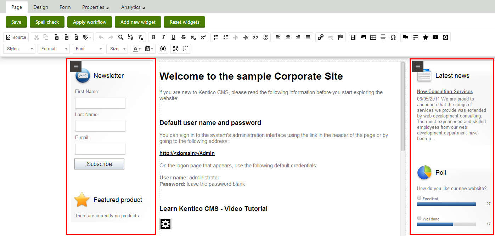
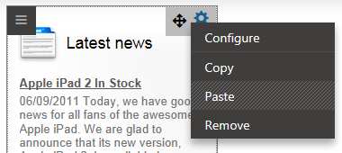
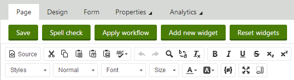
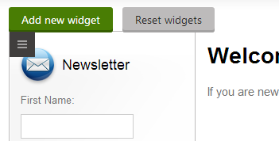
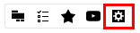

Adding page content through widgets
Widgets are page components that display content or provide some type of functionality. By adding widgets, you can create advanced web content on your pages. Widgets give you much more power and flexibility than editing text and images.
For example, widgets allow you to:
Add forms
Display dynamic lists of the website's content
Change the layout of a page's content
Kentico contains a set of widgets by default. The developers of your website can also prepare additional widgets with any required functionality.
Managing content in editor widget zones
You can add widgets on pages where the website's developers have prepared editor widget zones. The developers determine the following for each page:
The number of widget zones on the page
The position and size of individual zones
The default widget content in the zones
To work with the content of widget zones, edit pages on the Page tab of the Pages application. Here you can see editor widget zones surrounded by dotted outlines.

Working with widget zones
Important: Changes that you make to editor widgets are temporary until you Save the page. Applies to all actions: adding, configuring, moving and deleting widgets.
Editor widgets and workflow
The content of editor widget zones is included within the scope of workflow:
Editing of widgets is restricted by the rules of the defined workflow steps
Content changes do not appear on the live site until the page is published (after going through the workflow approval process)
The system tracks saved editor widget changes as part of page versioning
Note: Workflow does NOT apply to Content personalization or Multivariate testing variants of widgets. Changes made to editor widget variants can have an immediate effect on the live website, and are not included in the page version history.
Adding widgets
To add a widget to a zone:
Open the zone's menu (
 ).
).Click Add new widget.
Select a widget from the catalog (you can only choose widgets that are allowed for editor zones).
Click Select.
The widget configuration dialog opens (some widgets skip the initial property configuration dialog).
Set the properties of the widget.
Click OK.
The widget appears within the content of the page (inside the selected zone), but is NOT permanently saved yet.
Click Save to confirm the change to the page's widget content.
Configuring widgets
To edit the properties of existing widgets on the page:
Hover over the widget.
Expand the widget's menu (
 ).
).Click Configure.

Configuring widget propertiesSet the widget's properties. To learn more about specific widget properties, hover over the field captions and read the tooltips.
Click OK.
Save the page.
For security reasons, the system does NOT resolve macro expressions placed into the values of widget properties in the configuration dialog.
Moving widgets
To move a widget between zones on the page or to a different position in the same zone:
Hover over the widget.
Move the mouse over the Drag widget ( ) icon.
Drag the widget to the desired location.
Save the page.
Copying widgets
Copying allows you to duplicate editor widgets and paste them into any editor zone, including other pages on the same website.
You can copy:
Individual widgets - hover over the widget, expand the widget's menu (
), click CopyAll widgets in a zone - open the zone menu (
), click Copy all
The system saves the widgets and their configuration into an internal "clipboard". To paste the copied widgets:
Navigate to the target editor widget zone:
Place the copied widgets:
at the end of the zone - open the zone's menu (
), click Pastedirectly below a specific widget - hover over the widget, expand the widget's menu (
), click Paste
Save the page.
You can paste the widgets any number of times. Copying different widgets overwrites the clipboard content. Every user in the system has their own separate clipboard.
Deleting widgets
To remove a widget from the page:
Hover over the widget.
Expand the widget's menu (
).Click Remove.
You can also remove all widgets in a zone:
Open the zone menu (
).Click Remove all widgets.
In both cases, you need to Save the page to confirm the deletion.
When you remove widgets or whole widget zones, any content (such as text entered via a widget) no longer appears on the page, but remains preserved in the system. Such content may still impact your website, for example in search results.
If you want to permanently delete all content of widgets (or whole widget zones) from the system, you first need to edit the widgets and re-save them as empty widgets without any content.
Returning to the page's default widget content
If the page contains the Widget actions web part, you can reset all widget zones on the page to their default content. The position of the widget actions depends on the design of individual pages. Possible locations are:
Directly within the page content (only visible on the Page tab)
In the header of the Page tab

Resetting widget content to original state
Managing editor widgets directly on the site
You can work with editor widgets through the on-site editing interface:
Log in on the live website.
Click
 Edit page in the top left corner of the page.
Edit page in the top left corner of the page.Navigate to the page where you want to edit widgets.
Make the required changes to the page's widgets. The widget editing interface works the same way as on the Page tab of the Pages application.
Click Save on the on-site editing toolbar.

Managing widgets on the live site
Adding inline widgets into text
You can insert inline widgets directly when editing the text sections of pages:
Editable text regions on the Page tab
Text area page fields on the Form tab
Both types of text editing are also available in on-site editing mode.
To add an inline widget into text:
Click Insert/Edit widget on the editor toolbar above the text area.

Inserting a widget using the editorSelect a widget from the catalog (you can only choose widgets that are allowed for inline use).
Click OK.
Set the properties of the widget (some widgets skip the initial property configuration dialog).
Click OK.
Save the text field's content.
The system uses placeholder images to represent widgets in editing mode.
On the live site and in preview mode, the page displays the full output of the widget along with the remaining text content.
Configuring inline widgets
You can use three different ways to open the properties dialog for existing inline widgets:
Double-click the widget placeholder image in the text
Right-click the placeholder image and select Properties
Select the placeholder image in the text and click Insert/Edit widget on the editor toolbar
Inserting a widget using the editor